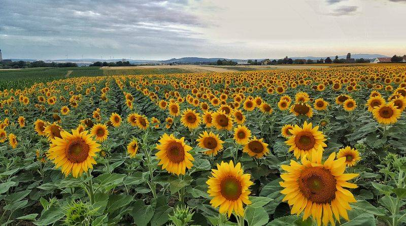
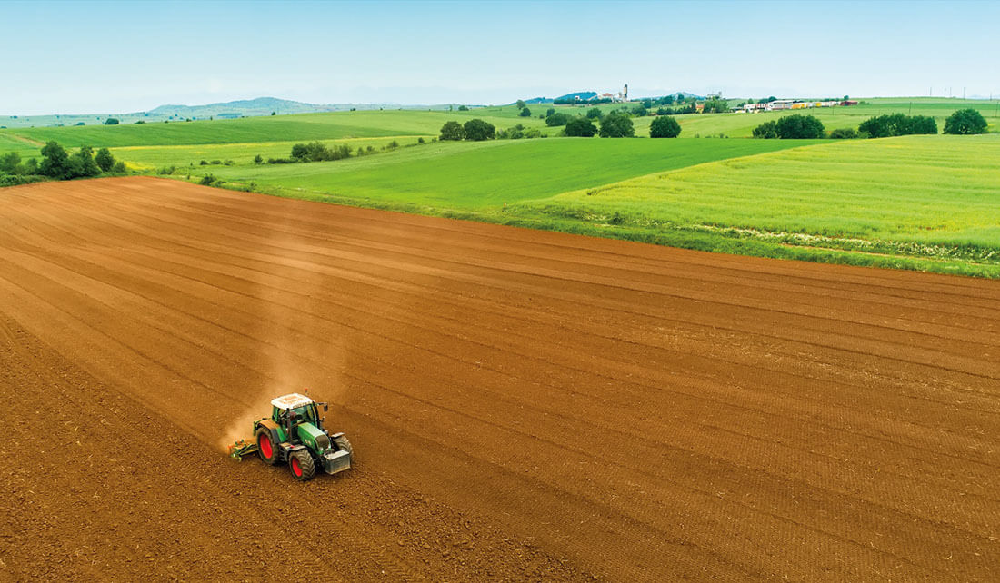
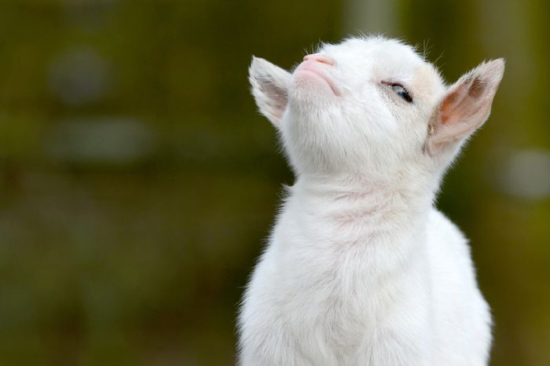
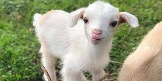

Ország: Állatok (Animalia) Törzs: Gerinchúrosok (Chordata) Altörzs: Gerincesek (Vertebrata) Főosztály: Négylábúak (Tetrapoda) Osztály: Emlősök (Mammalia) Alosztály: Elevenszülő emlősök (Theria) Csoport: Eutheria Alosztályág: Méhlepényesek (Placentalia) Öregrend: Laurasiatheria Csoport: Scrotifera Csoport: Ferungulata Csoport: Patások (Ungulata) Rend: Párosujjú patások (Artiodactyla) Csoport: Ruminantiamorpha Alrend: Kérődzők (Ruminantia) Alrendág: Pecora Öregcsalád: Bovoidea Család: Tülkösszarvúak (Bovidae) Alcsalád: Kecskeformák (Caprinae) Nemzetség: Caprini Nem: Kőszáli kecskék (Capra) Faj: C. aegagrus Alfaj: C. a. hircus |
    |